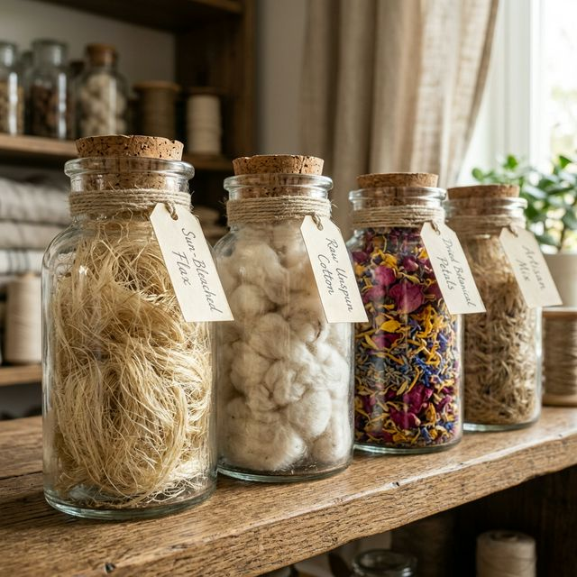

The Scribe's Ritual
Writing is more than recording; it is a ritual of anchoring thoughts into a physical vessel. When the nib meets the raw cotton of our 300 GSM stock, the interaction demands a slower pace. It is here, in the slight resistance of the fiber, that intentionality is born.
A Study on Stillness
The Fiber
Pantry
Our archive contains over forty distinct botanical fibers. From the sun-bleached flax of the Belgian countryside to the recycled cotton offcuts of Savile Row, every sheet begins in these glass jars.
- Egyptian Cotton (Archival) 90% Alpha
- Poppy Seed Inclusions Botanical

Ref № 881: Raw Hemp & Flax Blend
Heritage
Bindery
Each Foliage Edition is bound using the signature smock-stitch—a method that defies the rigid spine to offer a truly flat writing surface.
True permanence requires more than good paper. Our bindery uses traditional techniques that allow our journals to become an extension of the writer's hand. Each cover is hand-pressed using a 19th-century cast iron lever press, ensuring every piece is an heirloom.
Explore the Bindery